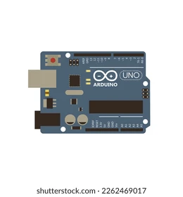

Activités proposées
Smart City
Hackathon mini

Experte en IoT et co-fondatrice de projets innovants. Passionnée par la connectivité et les solutions intelligentes.
Pionnier dans le domaine des capteurs et de l'Internet des Objets. Partage son expérience industrielle.

Visionnaire dans les technologies émergentes et la transformation numérique. Mentor pour startups IoT.
09:00 - 10:00
Discours d'ouverture suivi de la keynote principale sur les tendances IoT 2026.
10:15 - 12:30
Sessions hands-on sur capteurs, Arduino et développement IoT. Hackathon mini en parallèle.
12:30 - 14:00
Pause déjeuner avec possibilité de networking avec les experts et autres participants.
14:00 - 15:30
Interventions d'experts internationaux et discussions sur l'avenir de la Smart City.
15:45 - 17:00
Présentation des projets hackathon, remise des prix et clôture de la journée avec apéritif.
Ingénieur IoT - TechStartup
"Une journée extraordinaire ! Les ateliers pratiques m'ont permis de découvrir de nouvelles perspectives sur les capteurs IoT. Les intervenants étaient vraiment inspirants et accessibles."
Développeuse Hardware - Innovation Lab
"Le hackathon mini était bien structuré et stimulant. J'ai rencontré des talents incroyables et pu partager mes connaissances. Je recommande vivement cet événement !"
Chef de Projet - Smart City Solutions
"Excellent networking ! J'ai établi des partenariats précieux et appris les dernières tendances du marché IoT. L'organisation était impeccable du début à la fin."
Étudiante en Électronique - Université Tech
"Un événement captivant qui m'a motivée à poursuivre mes études dans l'IoT. Les ateliers Arduino ont été super instructifs et les mentors très patients et accessibles."